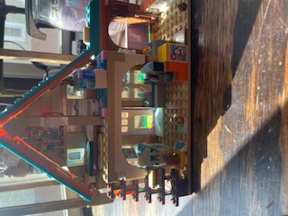
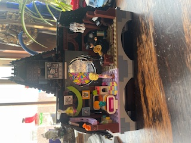
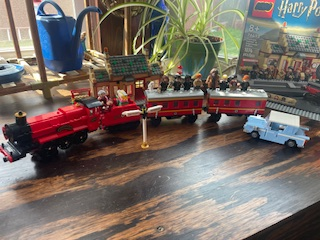

This is one of the free lego sets that we got at the lego store. When you are a member at the Lego Store you can earn rewards for you purchases. In return you can use your rewards to get smaller sets for free!
This is one of the lego sets from the Lego Freinds series.This set only had about 350 pieces and took Lyla about 45 minutes to put together.
This lego set is from the Wednesday Adams series. This series is based off the Netflix T.V. series Wednesday. Lyla purchased this set with her own money but only chose this one because she really wanted to leave the store with a new lego set and they were all out of the one she really wanted. However, she still had a lot of fun making this one.
This is the lego set that started it all, the Harry Potter Train Station! She started watching Harry Potter at the begining of this summer. She has made it through all the movies and is currently contemplating reading the books. After finishing the movies I told her they make a ton of collector sets for legos in the Harry Potter line and if she was interested we could get some of them. This set was about 785 pieces and it took her a hour and a half to put it together.
She is currently working on the "Burrow" which is the home of the Weasely family in Harry Potter. This lego set is over 1,000 pieces and she is taking her time finishing this set. She does a little bit every couple of days. Since this set if not finished she asked me not to post a picture of it yet until she finishes it.